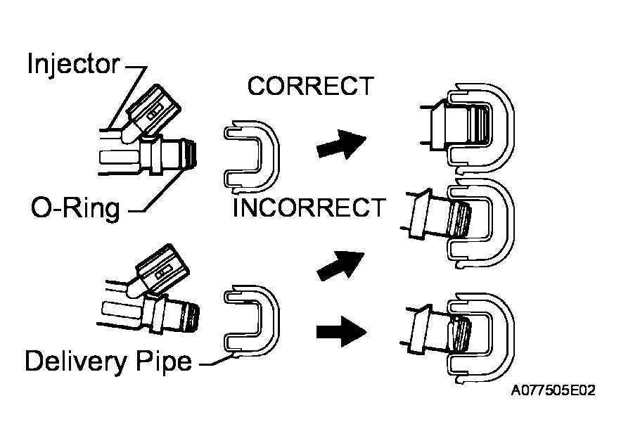
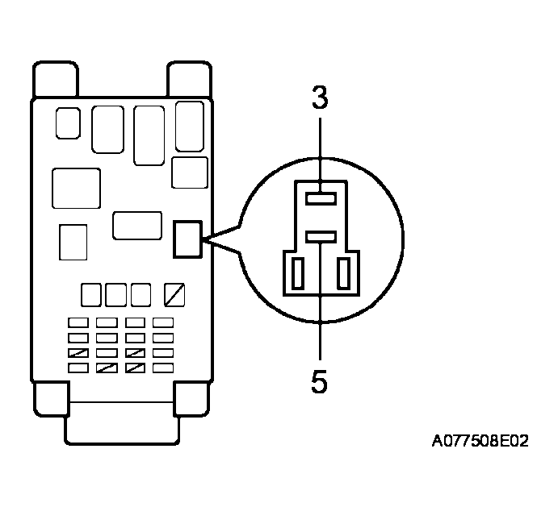

Fuel System: Precaution
- PRECAUTION
- Before working on the fuel system, disconnect the negative (-) battery terminal.
- Do not smoke or work near fire when handling the fuel system.
- Keep gasoline away from rubber or leather parts.
- DISCHARGE FUEL SYSTEM PRESSURE CAUTION:
- DISCHARGE FUEL SYSTEM PRESSURE procedures must be performed before disconnecting any part of the fuel system.
- After performing the DISCHARGE FUEL SYSTEM PRESSURE procedures, pressure will remain in the fuel line. When disconnecting the fuel line, place a cloth or equivalent over fittings to reduce the risk of fuel spray.
- Remove the circuit opening relay (Marking: C/OPN) from the instrument panel junction block.
- Start the engine. After the engine has stopped, turn the ignition switch OFF.
HINT:
Possibly DTC P0171 (system too lean) will be set.
- Check that the engine does not start.
- Remove the fuel tank cap, and let the air out of the fuel tank.
- Disconnect the cable from the negative (-) battery terminal.
- Install the circuit opening relay.
- FUEL SYSTEM
- When disconnecting the high pressure fuel line, a large amount of fuel will spray out, so perform these procedures.
- Discharge the pressure in the fuel system.
- Disconnect the fuel pump tube.
- Remove the tube joint clip, and pull out the fuel pump tube.
NOTE:
- Check around the connector for dirt or mud before this operation and clean as necessary.
- Be careful of mud because the quick connector has an O-ring (which seals the pipe and connector) that can be contaminated.
- Do not use any tool in this operation.
- Do not bend or twist the nylon tube. Protect the connector by covering it with a plastic bag.
- When the pipe and connector are stuck, push and pull the connector to release and disconnect the connector.
- Remove the tube joint clip, and pull out the fuel pump tube.
- Drain the fuel remaining inside the fuel pump tube.
- Cover the disconnected fuel pump tube with a plastic bag to prevent damage and intrusion of foreign objects.
- Place a tray under the vehicle or point of disconnection to catch any fuel spray.
- Follow these precautions when removing and installing the fuel injectors.

Courtesy of © TOYOTA, LICENSE AGREEMENT TMS1002NOTE: Never reuse the O-ring.- When installing a new O-ring onto the injector, be careful not to damage it.
- Coat the new O-ring with grease or gasoline before installing. Never use engine oil, gear oil or brake oil.
- Install the injector onto the delivery pipe and cylinder head as shown in the illustration. Before installing the injector, be sure to apply grease or gasoline to the place where the delivery pipe comes into contact with the O-ring of the injector.
- Follow these precautions when disconnecting the fuel tube connectors.
- Remove the fuel pipe clamp from the connector.
- Check the pipe and around the connector for dirt or mud before disconnecting it and clean as necessary.
- Disconnect the connector from the hose while pinching part A with your fingers as shown in the illustration.
- If the connector and pipe are stuck, pinch the fuel pipe with your fingers, then push and pull the connector to release and disconnect the fuel tube connector. Do not use any tools.
- If there is dirt or any other substance in the sealing surface that might interfere with the seal, clean the area thoroughly before assembling.
- Cover the disconnected fuel tube connector and pipe with a plastic bag to prevent damage and intrusion of foreign objects.
- Follow these precautions when connecting the fuel tube connectors.
- Check the connected part of the pipe for damage or foreign objects.
- Align the axis of the connector with the axis of the pipe, and push the pipe into the connector until the connector makes a "click" sound. If the connection is tight, apply a small amount of fresh engine oil to the tip of the pipe.
- After finishing the connection, check that the pipe and connector are securely connected by pulling them.
- Install the fuel pipe clamp to the connector.
- Check for fuel leaks.
- When disconnecting the high pressure fuel line, a large amount of fuel will spray out, so perform these procedures.
- CHECK FOR FUEL LEAKS
- When using the intelligent tester:
- Connect the intelligent tester to the DLC3.
- Turn the ignition switch ON.NOTE: Do not start the engine.
- Select the ACTIVE TEST mode on the intelligent tester.
- Please refer to the intelligent tester operator's manual for further details.
- When not using the intelligent tester:
- Remove the circuit opening relay from the instrument panel junction block.
- Using a service wire, connect terminals 3 and 5 of the relay block.

Courtesy of © TOYOTA, LICENSE AGREEMENT TMS1002NOTE: Pay attention to the terminal connecting position to avoid malfunctions. - Turn the ignition switch ON, and check that the fuel pump operates.NOTE: Do not start the engine.
- Check that there are no fuel leaks after doing maintenance to the fuel system.
- Disconnect the intelligent tester from the DLC3.
- When using the intelligent tester: